National Gallery of Victoria Analaysis
Q1: What was the first thing you paid attention to when interacting with the experience?
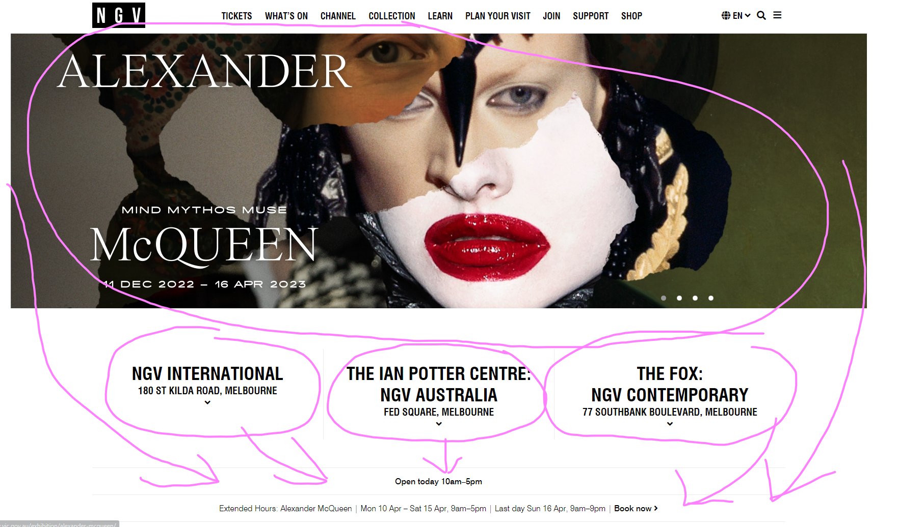When I interacted with the experience the large moving gallery showcasing the current works on display is what caught my eye. The combination of the immediate flow of images, with the oversized position in the center naturally drew my focus towards the centre of the page. Further, this provided an organic solution for my eyes to comfortably proceed downwards.
Q2: Spend two minutes with the experience and create a list of each of your discrete actions.
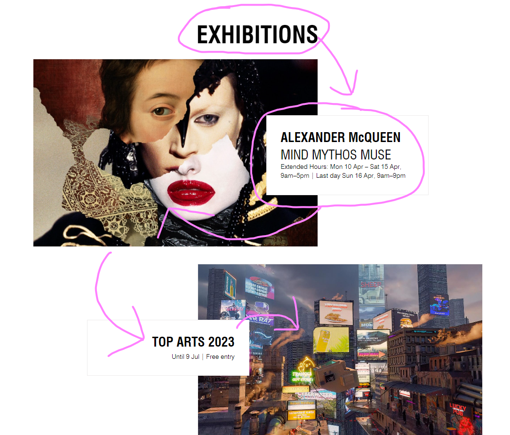My experience consisted of clicking on the url, and with the page loading, I instinctively clicked on the black page, which took me towards the large image gallery in the centre. I then proceeded to read the boxes at the bottom of the screen, quickly scanning the text, before darting my eyes to the top of the page to read what was up there. Then I began to scroll through the page, my eyes naturally gravitated towards the square boxes on the page, which contained text for me to read, before then looking at the accompanying image. I noticed some images didn’t load fully by the time I reached their segment on the page, so my eyes spent more time reading the text before engaging with the images. The layout of the page caused my eyes to remain fixated on the centre of the page, while the structure of the alternating image and text pattern allowed my eyes to feel more relaxed as I navigated the page downwards. I also found it aesthetically pleasing with the use of a clean black and white colour scheme.
Q3: What part of the experience did you spend the most time engaging with?
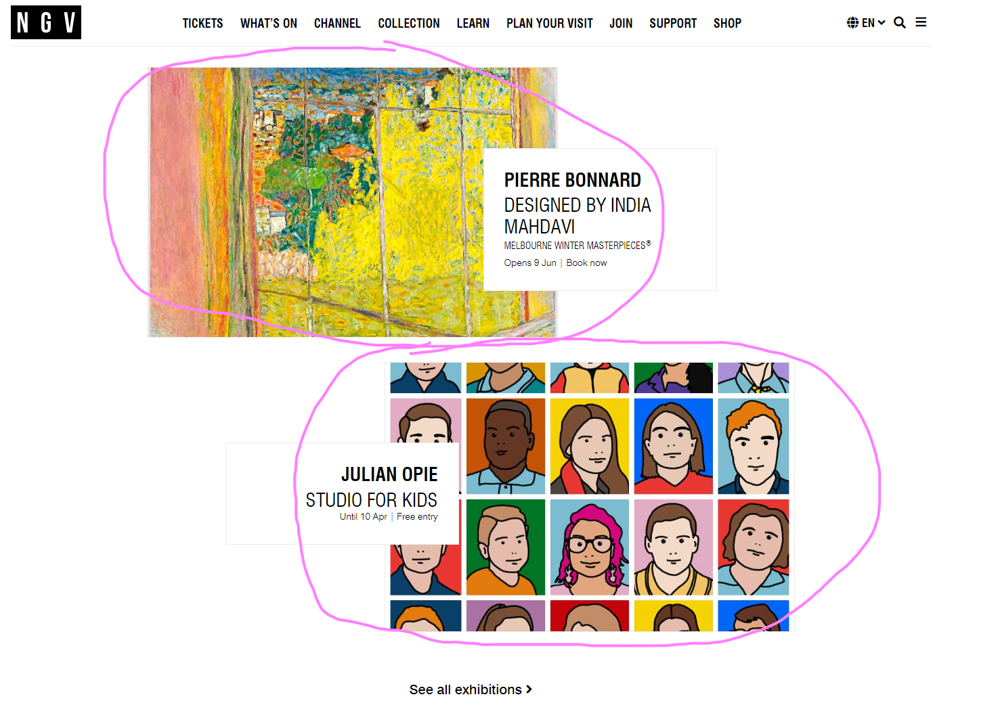The sizing of the images on the page allowed me to further engage with them, alongside the deliberate choice of them being presented in colour. The contrast naturally kept my attention, rather than getting distracted by the anchored navigation bar at the top.
Q4: What was the most common action in your two minute interaction with the experience?
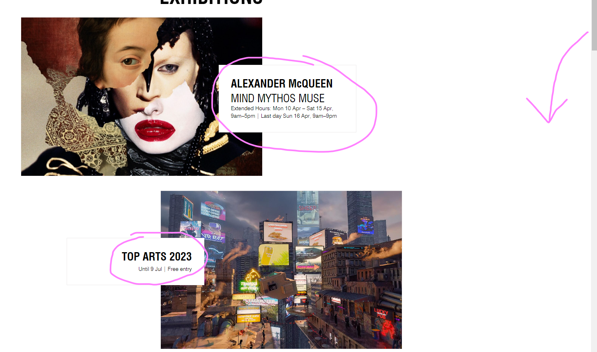The most common action I did was utilising the scroll function to navigate through the current exhibitions on the page. The flow was easy to navigate, while the intentional delay of the images loading gave me appropriate time to read the relevant text before allowing me to process the next item.
Q5: What is your impression of the intended primary goal of the interactive experience?
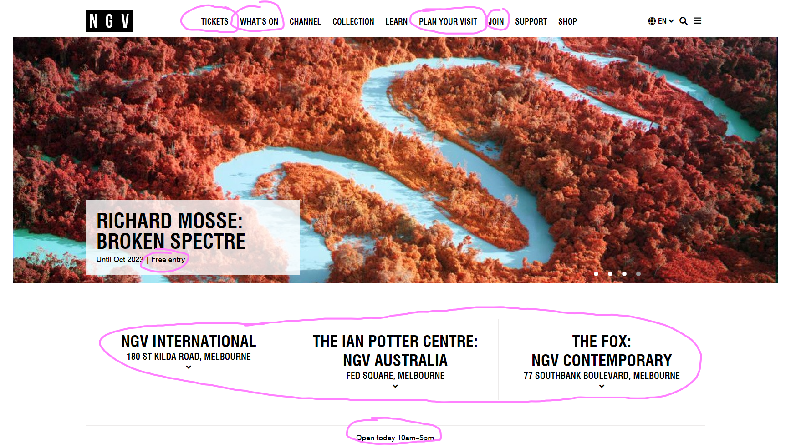I believe the primary goal of the website is to create an aesthetically pleasing experience that feels modern and contemporary, this will in turn attract art enthusiasts into exploring the exhibitions that are being presented at the gallery.
Q6: What is your impression of how the interactive experience communicates its primary goal?
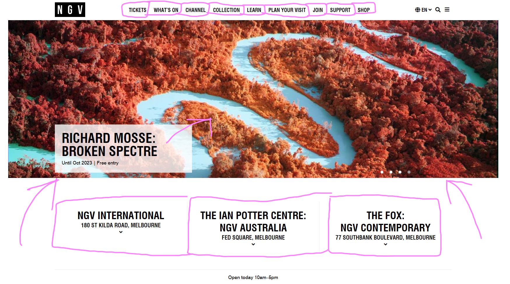The interactive experience communicates this by having a minimalist, clean layout. This layout is done using scarce amount of colour in order to make the webpage readable, while allowing greater emphasis on the images that stand to contrast the clean colour scheme. The layout for the exhibition portion of the page shifts sides for points of attention, which allows the user to engage in a compelling form of readability as their eyes naturally feel guided by the art and text. By utilising this form of layout rather than a traditional linear structure, the user can feel more immersed, and actively interested with the works being presented.
Q7: What is your impression of how the experience should be interacted with over time? (For how long and how many different times)
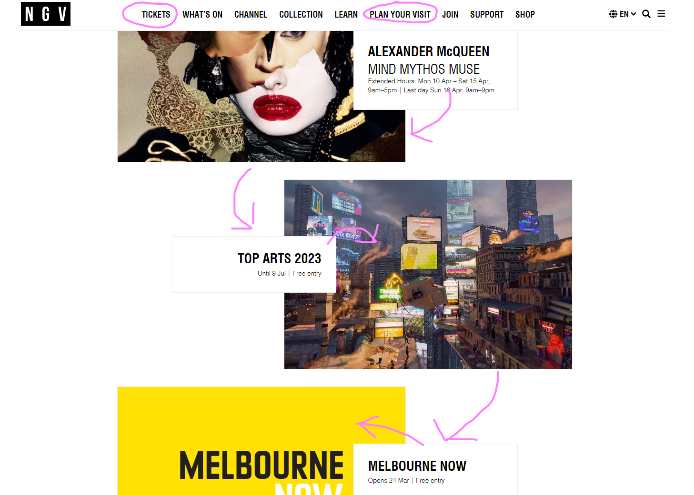The experience is designed for a strong first impression, while allowing accessibility by categorising the information a user would find important through a vertical hierarchy, starting with the top. This allows the user to appropriately read the information and find it, while still retaining the initial pop of the initial impression. Despite the page being focused on a strong first interaction, the experience has also been designed with long term use, by providing the most relevant or up to date information at the top of the experience, with several opportunities to explore or update any existing information over time, so that users can continue to engage with that sense of initial discovery.
Q8: What is your impression of how the interactive experience communicates how it should be interacted with over time?
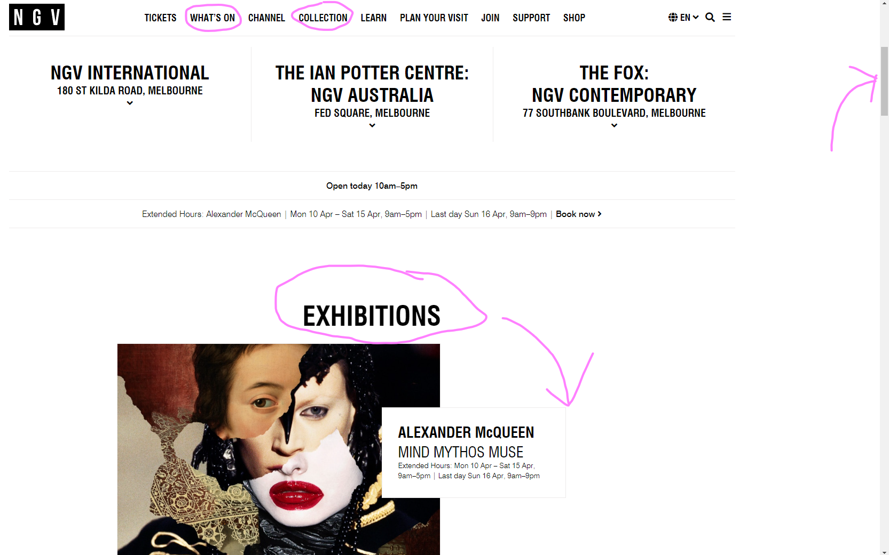Over time, the experience encourages users to regularly check in through showcasing it’s exhibitions clearly. By having it organised at the top, it allows users to intuitively discover it without needing to memorise specific navigational cues. By placing the most significant information at the top, the experience communicates greater emphasis on the first impression, rather than detailed readings at the bottom. Resulting in an accessible, immediately gratifying experience for users, as the Design is catering on users coming back in to check for what’s new.
Q9: What other media forms (digital or otherwise) does the experience reference?
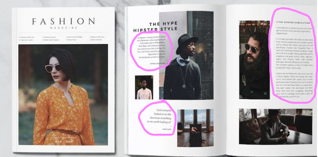This experience references contemporary fashion magazines. NGV is attempting to invoke a clear, sleek, and elegant style, which, alongside it’s navigational experience, mimics the minimalist experience that fashion magazines present. One of the most striking comparisons is the way text is presented, especially during the Exhibition portion of the page. The types of symmetrical transition between both sides of the pages, and square focused layout is directly apparent when comparing NGV's website to fashion magazines.
Q10: What does this reference or references suggest to you about how you should act when engaging with it?
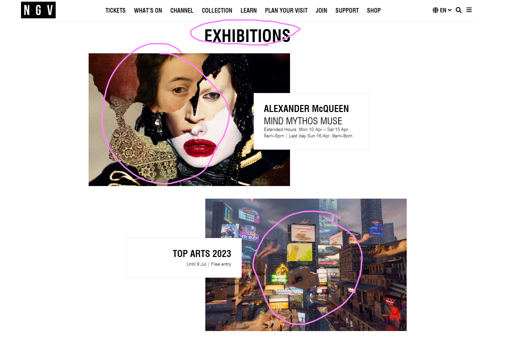Through directly referencing fashion magazines, it incentivises users to navigate faster to consume as much information as possible. Alongside this, the deliberate use of oversized images, serves as an instrumental tool to create points of interest across the page. This allows the most relevant and important element, that being the exhibitions, to be incredibly hard to miss. Additionally, NGV has included the smaller text descriptions of the relevant information, which incentivises users to engage with the work they feel most interested in, while being minimal enough that those who aren’t interested can continue to discover the next exciting project.
Q11: What does this reference or references suggest to you about how you should feel when engaging with it?
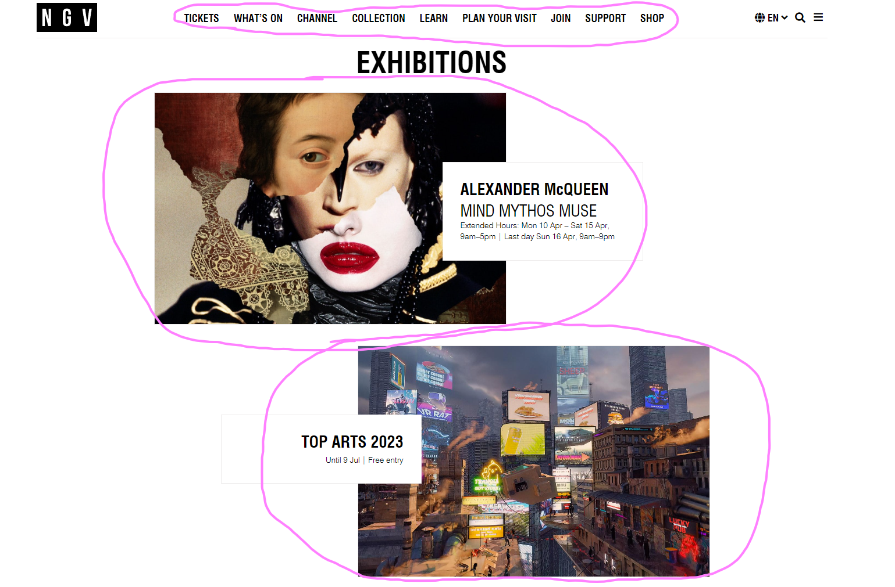It encourages users to feel excited, while simultaneously relaxed. By invoking a cleaner style, it allows users to engage with the idea that NGV is elegant, modern, and a place where the finest works are shown. In not being dramatic or flashy, and allowing the works to speak for themselves through it’s square focused layout, users can feel relaxed rather than overwhelmed as they consume the relevant information. Alongside this, the deliberate choice of allowing the works on the page to be the standout pieces, allows users to get excited towards the exhibitions that interest them the most. By appropriately balancing the contrast and navigational layout, with the exhibition sizing, users can simultaneously feel their eyes are relaxed, while engaging with points of interest for excitement.
Q12: What is the most frustrating element of the interaction to you and what makes it frustrating?
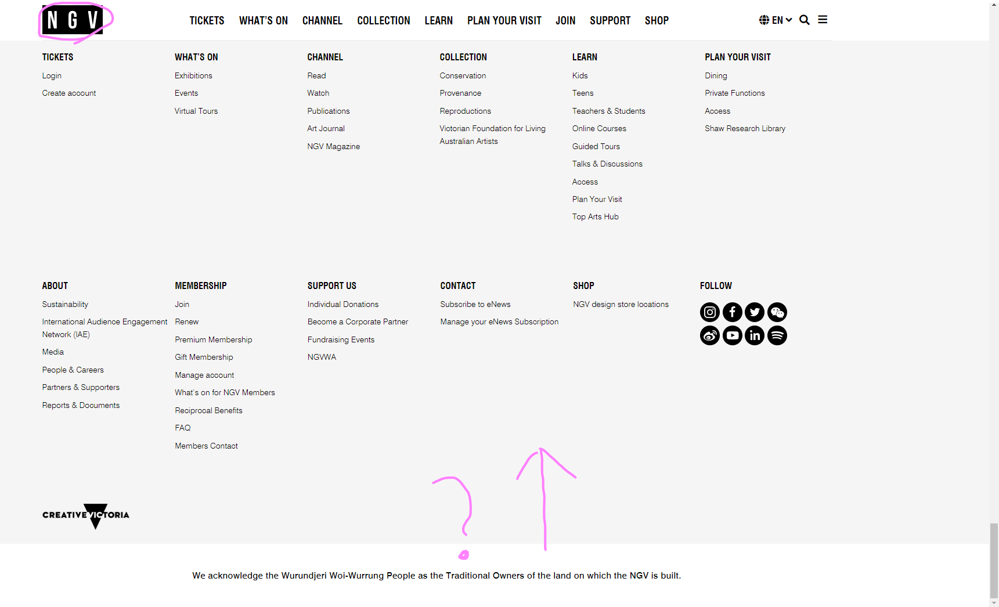The most frustrating element of the interactive experience is the lack of a ‘return to top’ function on the webpage. This is especially apparent on the homepage, where the user is encouraged to scroll all the way to the bottom, and, in the instance where a user might want to return to the top to see what’s available again, they would have to scroll all the way back up. This issue is made more apparent by the lack of a clear ‘return to home’ function, as the NGV logo at the top left of the screen is the way to go back, however it lacks any feedback that a user on a computer device can appropriately engage with. This in contrast to the rest of the navigational bar at the top, which has the relevant feedback associated with hovering, results in an inconvenience in an otherwise engaging experience.
Q13: What is the most satisfying element of the interaction to you and what makes it satisfying?
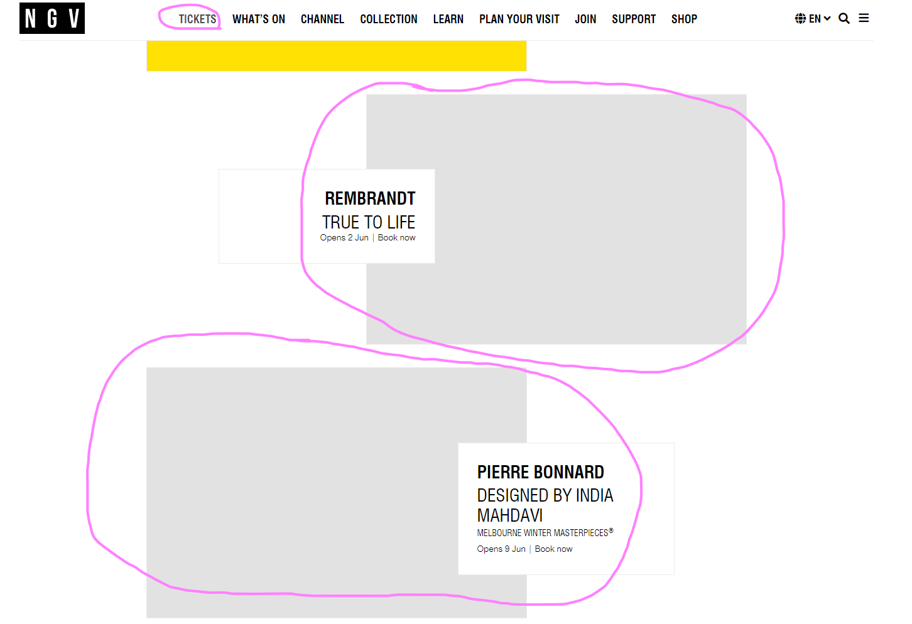The most satisfying element of the experience is the various intuitive ways the experience responds to the users input. For instance, when the user first arrives on the webpage, and they begin to navigate downwards, the images are deliberately timed to load in after a few moments, ensuring the user doesn’t get bombarded by a visual overload, and retaining visual consistency with the minimalist aesthetic. Alongside this, the way the majority of elements on the page respond to the user by highlighting it, with subtle movement gestures, or gentle white contrast being applied, enables the experience to feel significantly more engaging, while, again, retaining the pages aesthetic. The satisfaction of having my own movements bring the page to life, brings a subtle, yet, significant element of satisfaction that keeps the experience feeling cohesive and organic, rather than static or disengaging.